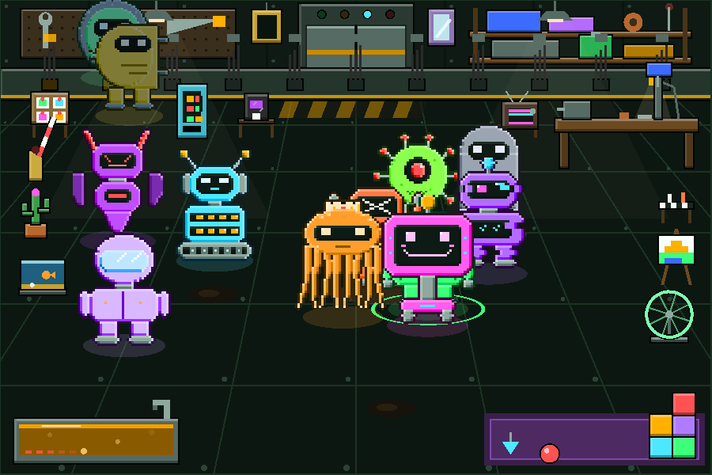
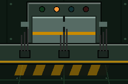
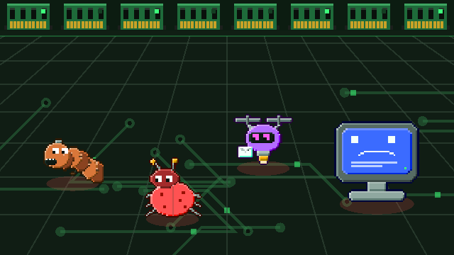
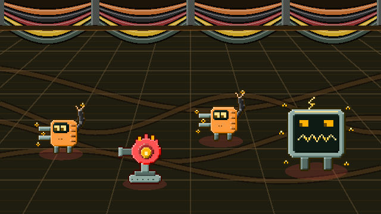
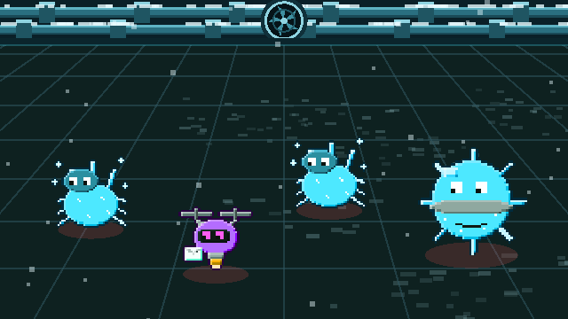
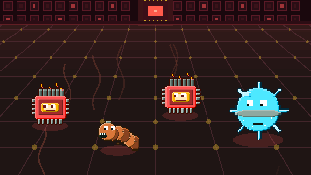

Archiv · Weltkarte
Weltkarte
Die ganze Welt ist ein einziger alter Rechner. Jedes Spiel spielt in einem seiner Bauteile: BYTE klettert über die Etagen nach oben zum Hauptrechner, in der Mitte liegt die Werkstatt, darunter führt der Schrottschacht in die Tiefe. Die geplanten Spiele besetzen die übrigen Bauteile. Bolt Buddies ist die Heimat, in die alle Roboter später mit Erfahrung und Beute zurückkehren, siehe Funkverbindung.
Der Rechner im Querschnitt
Jedes Feld führt zu seinem Bauteil. Gestrichelt: Spiele, die noch geplant sind.
Bauteil: Prozessor
Bits & Bolts
Im Play StoreBinär-Rätsel als Roguelite
Ein Roboter arbeitet sich durch zehn Stationen bis zum Hauptrechner und repariert unterwegs durchgebrannte Raster aus Nullen und Einsen. Jede falsche Ziffer ist ein Kurzschluss und kostet Ladung. Siege schalten neue Roboter und höhere Schwierigkeitsstufen frei.

Die Etagen
Station 1–10
Der Weg nach oben führt über zehn Stationen: sieben Rätsel und zwei Zwischenrechner an Station 4 und 7. In jedem Rätsel gelten drei Grundregeln: nur 0 und 1, nie drei gleiche nebeneinander, in jeder Zeile und Spalte gleich viele. Dazu bringt jeder Roboter eigene Hinweise mit.

Zwischenrechner
Station 4 und 7
Hier gelten verschärfte Bedingungen, ab Stufe 1 mit einem Ereignis wie Nebel, Zeitdruck oder falschen Vorgaben.

Hauptrechner
Ziel jedes Runs
Bis zu vier Sektoren: die äußeren Leitungen unter Spannung, ein Sektor mit Stromausfall, der innere Ring unter Überspannung und der Kern in 8×8. Nach jedem Sektor gibt es eine Ladung zurück.
Bauteil: Gehäusemitte und Schacht
Bolt Buddies
In EntwicklungRoboter pflegen und Auto-Kämpfe
Die Werkstatt ist das Zuhause aller geretteten Roboter. Sie brauchen Akku, Öl und Aufmerksamkeit. Ein Team aus bis zu drei Robotern zieht in den Schrottschacht, kämpft dort von selbst und bringt Schrauben, Ausrüstung und neue Freunde mit.

Die Werkstatt
Zuhause
Hier wohnen alle geretteten Roboter. Sie laufen frei herum, wollen gestreichelt, geölt und geladen werden und schlafen an der Ladeleiste. Jeder Gerettete bringt ein persönliches Teil mit, so füllt sich der Raum mit jedem Roboter.

Der Aufzug
zwischen den Kämpfen
Nach jedem Kampf: weiter nach unten oder mit der ganzen Beute nach Hause. Die nächsten Gegner sind schon zu sehen, und es gibt zwei Wege: den Hauptschacht und einen Nebenschacht mit zäheren Gegnern und 75 % mehr Schrauben.
Der Schrottschacht
unter der Werkstatt
Kampf für Kampf geht es tiefer. Dort liegen Schrauben, Akkus, Öl und Ausrüstung, und abgeschaltete Roboter warten in ihrer Ebene auf Rettung.
Die Ebenen des Schrottschachts
Kommt mit Bolt Buddies 1.0: Alle 10 Kämpfe beginnt eine neue Ebene mit eigener Kulisse und einem eigenen Gegner. In der Mitte wartet ein Boss, im letzten Kampf ihr Wächter. Wer ihn besiegt, kann künftig an der Haltestelle der nächsten Ebene einsteigen und bekommt dafür von der Werkstatt Module mit. Gegner und Werte stehen im Störungsprotokoll.

Speicherkeller
GeplantArbeitsspeicher · Kampf 1–10 · Wächter: Bluescreen
Zwischen alten Speicherriegeln blinken Lämpchen, auf dem Boden wandern Datenpakete über die Leiterbahnen. Bugs, Spam-Drohnen, Firewalls und Rostwürmer. Hier warten 7 Roboter auf Rettung.

Kabelschacht
GeplantKabel · Kampf 11–20 · Wächter: Kurzschluss
Durchhängende Kabelstränge, an den Haltern sprühen Funken. Hier leben die Wackelkontakte: Wer sie trifft, bekommt einen Schlag. 6 Roboter warten hier.

Kühlkreislauf
GeplantKühlung · Kampf 21–30 · Wächter: Kältekern
Vereiste Rohre, ein großer Lüfter, Schnee fällt. Frostbugs kühlen mit ihren Treffern ab. In der Mitte kehrt der Kurzschluss zurück. 5 Roboter warten hier.

Kernzone
GeplantKern · ab Kampf 31 · Wächter wechseln
Der Kern glüht rot, Hitze steigt auf. Überhitzer treffen das ganze Team, die drei Wächter wechseln sich ab, und es geht endlos weiter. Hier warten ROOT, ERROR und DAEMON.
Was noch kommt
| Feature | Worum es geht | Version |
|---|---|---|
| Schacht-Ebenen | Umgesetzt: Alle 10 Kämpfe eine neue Ebene mit eigener Kulisse, eigenem Gegner, Boss und Wächter, dazu Haltestellen zum Direkteinstieg. Siehe oben. | 1.0 |
| Aufzug mit zwei Wegen | Umgesetzt: Vorschau auf die nächsten Gegner, dazu ein Nebenschacht mit zäheren Gegnern und mehr Schrauben. | 1.0 |
| Rettung je Ebene | Umgesetzt: Jeder Roboter wartet in seiner Ebene. Wo, steht im Roboter-Register. | 1.0 |
| Werkstatt | Umgesetzt: eingerichtete Werkstatt, jeder Gerettete bringt ein persönliches Teil mit. Ladeleiste, Ölbad, Spielecke und Werkbank in drei Stufen, die Funkantenne folgt mit dem Funk. Siehe Ersatzteillager. | 1.0 |
| Werkbank | Umgesetzt: Teile zu Schrott zerlegen und damit Teile aufwerten, auch angelegte. Siehe Ersatzteillager. | 1.0 |
| Tagesschacht | Umgesetzt: einmal am Tag eine Expedition mit Vorgabe des Tages und einem Teil als Belohnung. Siehe unten. | 1.0 |
| Erste Schritte | Umgesetzt: BYTE zeigt Neuen der Reihe nach Akku, Ölen, Expedition, Ausrüstung und den ersten Ausbau. Jeder Hinweis erscheint erst, wenn er passt. | 1.0 |
| Erinnerungen | Umgesetzt: höchstens eine Benachrichtigung am Tag, nur zwischen 10 und 20 Uhr, standardmäßig aus. Siehe unten. | 1.0 |
| Vertrauen | Jeder Roboter sammelt Vertrauen durch Pflege und Expeditionen. Es schaltet Sprüche, Lackierungen und eine stärkere Eigenheit frei. | 1.1 |
| Team-Familien | Zwei oder drei Roboter derselben Familie im Team geben einen Bonus. Siehe Roboter-Register. | 1.1 |
| Funk | Post aus den anderen Spielen. Siehe Funkverbindung. | 1.2 |
Tagesschacht
Einmal am Tag gibt es eine Expedition, die für alle gleich ist: Seed und Vorgabe hängen am Datum, Start ist immer bei Kampf 1. Der Versuch zählt ab dem Start. Gezählt werden die Tage im Tagesschacht, ein verpasster Tag setzt nichts zurück.
| Vorgabe | Was gilt |
|---|---|
| Keine Reparatur | Reparatur wird nie angeboten. Wer angeschlagen ist, bleibt es. |
| Allein | Nur der erste Roboter im Team darf mit. |
| Glaskanonen | 30 % weniger Leben, 30 % mehr Schaden. |
| Schatzsuche | Keine Module, dafür doppelte Schrauben. |
Als Belohnung gibt es ein Teil, auch nach einem Ausfall: ab Kampf 10 mindestens solide, ab Kampf 20 und an jedem 7. Tag mindestens selten.
Erinnerungen
In den Optionen lassen sich Erinnerungen einschalten. Beim Schließen plant das Spiel dann höchstens eine Benachrichtigung: wenn der erste Roboter ausgeschlafen ist oder etwas braucht, oder wenn der Tagesschacht wartet. Nie in den ersten zwei Stunden, nie nachts, höchstens eine am Tag. Alles läuft auf dem Handy, ohne Server.
Bauteil: Netzwerkanschluss
Block Invaders
GeplantBlock-Puzzle gegen angreifende Störungen
Bugs, Spam-Drohnen, Firewalls und Rostwürmer rücken von außen auf die Werkstatt vor. Volle Reihen feuern Salven, volle Spalten Laser. Jede fünfte Welle bringt einen Bluescreen. Der gewählte Roboter steht als Geschütz unten und feuert mit seiner Eigenheit, zum Beispiel trifft OKTA die ganze Reihe.
Die Abwehrstellung
Geplantam Netzwerkanschluss
Der Rand des Rechners, an dem Störungen aus dem Netz in Formation anrücken.
Bauteil: Taktgeber
Loop Runner
GeplantZeitschleifen-Plattformer
LOOP hat 20 Sekunden und sich selbst als Team: Jede Schleife wird aufgezeichnet und läuft in der nächsten als Kopie mit. Zusammen halten sie Türen offen, graben Fallen und sammeln Bits, während Wachbots patrouillieren.
Das Schleifenlabor
Geplantim Taktgeber
Ein Labor im Herzschlag des Rechners: Alle 20 Sekunden schlägt der Takt, und die Zeit beginnt von vorn.
Bauteil: Lagesensor
Kippwelt
GeplantPlattformer ohne Springen
Der Roboter dreht die ganze Welt um 90 Grad, und alles Lose fällt nach unten. Erst den Zugangschip holen, dann zum Ausgang. Kisten zerquetschen Gegner, Stacheln sind gefährlich.
Das Schwerkraft-Labor
Geplantim Lagesensor
Räume, die sich drehen lassen. Unten ist immer da, wo der Sensor gerade unten meldet.
Bauteil: Netzteil
Zündkette
GeplantKettenreaktions-Rätsel
Ein einziger Überspannungsimpuls muss alle Viren erwischen. Kondensatoren geben die Ladung weiter, Schrottkisten brennen weg, Steine halten auf. Gesucht ist der eine Platz, von dem aus die Kette alles erreicht, nur den Roboter nicht.
Das Kondensatorlager
Geplantim Netzteil
Hier wird der ganze Rechner mit Strom versorgt. Voller Kondensatoren und Schrottkisten, in denen sich Viren verstecken.
Bauteil: Datenbus und Anschlüsse
Snake Jam
GeplantSchiebe-Rätsel mit wachsenden Bussen
Bunte Datenbusse müssen ihre Pakete einsammeln und zum Port hinausfahren. Jedes Paket macht den Bus länger, und lange Busse stehen sich selbst im Weg.
Das Datenbus-Depot
Geplantam Datenbus
Ein voller Parkplatz für Datenbusse, nur eine Ausfahrt zum Port.